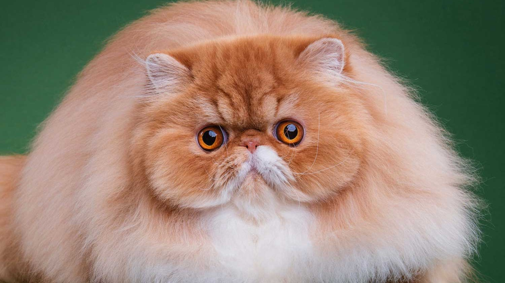

Про котиків та собачок
Що таке собака
Пес або собака
(Canis) — рід ссавців родини псових (Canidae), який об'єднує звірів з добре розвиненими
довгими кінцівками, пристосованими до швидкого бігу (кігті невтяжні).
Вони переслідують здобич, часто утворюють сім'ї та зграї. Цей рід включає вовків, шакала, койота, а
також свійського пса.
Особливості собак:
- Собака копає своє місце
- Ніс собаки як відбиток пальця
- Зворотне чхання у собаки
Цікавий факт: У собак, як і в людей, бувають різні групи крові, тільки у собак їх одинадцять.
Маленький недолік: під час сезонної линьки прекрасний шерстяний покрив вихованця перетворюється на катастрофу.
Немає в світі кращого психіатра, ніж цуценя, яке лизнуло вас в обличчя.
Що таке кіт
Кіт або кішка
(Felis) — рід хижих ссавців родини котових (Felidae).
У деяких старіших системах класифікації до нього зараховували всіх представників малих кішок (Felinae),
проте зараз безпосередньо до роду відносяться лише кілька видів невеликих тварин, що мешкають у Євразії
та Африці.
Особливості кішок:
- Органи чуття у кішки розвинені набагато краще, ніж у людини та інших тварин
- Зір у кішки приблизно у 6 разів кращий, ніж у людини.
- Подаючи голос кішка може видавати різноманітні звуки різної тональності – сліпий музикант з абсолютним слухом Марвін Кларк визначив, що у голосі кішки є понад 100 звуків.
Цікавий факт: Найпліднішою кішкою світу сьогодні, є кішка, на ім'я Дасті з Бонема, штат Техас, США. За все своє життя кішка народила на світ 420 кошенят!
Маленький недолік: з появою в будинку кішки, доведеться виробити цілий список правил поведінки, що стосуються не лише вихованця, але і себе.
Навіть найменший котик – це шедевр.
